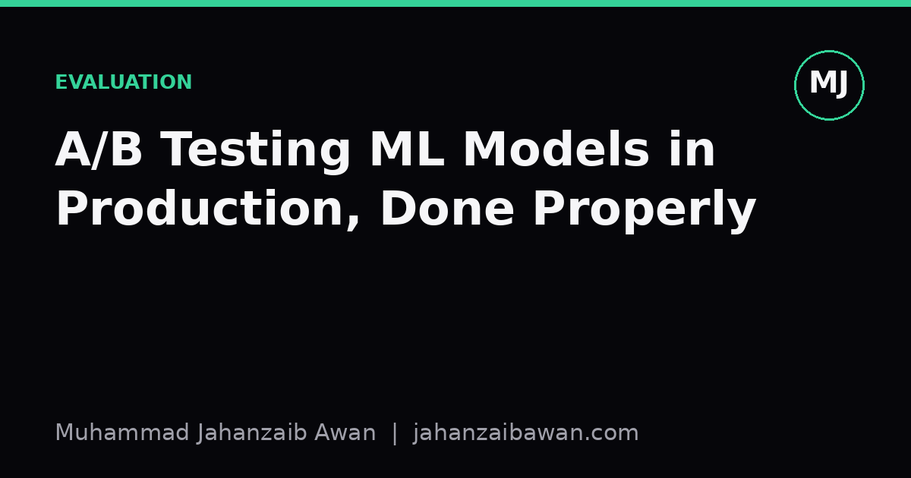

A/B Testing ML Models in Production, Done Properly
Offline metrics tell you a model is better in theory. A well-run A/B test tells you whether it actually matters to users, and by how much.

Why offline wins so often disappear online
Every practitioner has seen it: a new model beats the old one on a held-out test set, sometimes by a comfortable margin, and then it does nothing or slightly worse once it touches real traffic. This is not a paradox. Offline evaluation measures a proxy: how well predictions match historical labels under historical conditions. Production performance measures something else entirely: how users behave when the model's outputs change what they see, click, buy, or ignore. A model that predicts click probability marginally better can still produce a worse user experience if its improved calibration comes with higher latency, or if it systematically favours a narrower slice of content that looks good in aggregate metrics but bores people over a session.
A/B testing exists to close that gap. Instead of asking 'is this model more accurate on a fixed dataset', it asks 'does routing real users to this model change the outcomes we actually care about, in the direction we want, by an amount worth the engineering cost of shipping it'. That is a much harder and much more honest question, and it is the one that should gate any production rollout. The trouble is that A/B testing for ML models has more failure modes than a typical marketing experiment, because the treatment is not a button colour, it is a statistical system with its own biases, drift, and interaction effects with the rest of the pipeline.
Randomise correctly, or the test is worthless before it starts
The first and most common mistake is randomising at the wrong unit. Say you are testing a new recommendation model on an e-commerce site. If you randomise at the request level, the same user might see the old model on one page load and the new model on the next. Any behavioural metric that depends on consistency across a session, like whether someone eventually completes a purchase, becomes contaminated: the user's decision was influenced by a mixture of both models, and neither arm gets clean credit. The fix is almost always to randomise at the user level, assigning each user to a single arm for the duration of the experiment, using a stable hash of a user or account identifier so assignment is deterministic and sticky across sessions and devices where possible.
Second, watch for interference between arms. If your model affects a shared, limited resource, inventory being an obvious example, then giving one arm an advantage necessarily starves the other, and the comparison stops being fair. A recommendation model that surfaces a popular item more aggressively can deplete stock that the control arm's users would otherwise have seen. In marketplaces and ad systems this is a well-known problem, and the usual mitigations are geographic splitting, time-based splitting, or more sophisticated switchback designs where the same population alternates between arms over fixed windows, at the cost of more complex analysis.
Third, be honest about the novelty effect. A new ranking algorithm can look better for the first few days simply because returning users notice something different and click more out of curiosity, not genuine preference. Running the test for too short a window will systematically overstate the effect. A reasonable rule of thumb is to run long enough to cover at least one full natural cycle of user behaviour, commonly a week for consumer products with weekday and weekend patterns, and to check whether the effect size is stable or decaying across that window before trusting it.

Sample size, guardrails, and a worked example
Before launching, decide the minimum effect size worth detecting and compute the sample size needed to detect it with reasonable power, rather than watching the dashboard and stopping whenever the line looks favourable. That practice, often called peeking, inflates the false positive rate substantially, because checking a noisy metric daily and stopping at the first crossing of significance is statistically closer to running many small tests than one large one.
Here is a concrete illustration. Suppose your current click-through rate is 4.0 percent and you want to detect an absolute lift of 0.3 percentage points, moving to 4.3 percent, with a two-sided test at 5 percent significance and 80 percent power. Using the standard formula for comparing two proportions, this works out to roughly 40,000 to 45,000 users per arm, depending on the exact variance assumptions. If your product only sees 5,000 daily active users split across two arms, you are looking at roughly two to three weeks minimum just to reach that sample, and that is before accounting for any weekly seasonality you want to average over. Teams frequently underestimate this and end up running underpowered tests that report 'no significant difference' when the true effect was real but the sample was too small to detect it reliably; absence of significance is not evidence of absence.
Equally important is choosing guardrail metrics alongside the primary metric. If your new model improves click-through rate but you never check latency, revenue per user, or complaint rate, you can ship a model that technically wins on the metric you optimised for while quietly degrading something you forgot to measure. A practical setup defines one primary metric that decides the ship or no-ship call, two or three guardrails that must not move in the wrong direction beyond a tolerance you set in advance, and a small set of diagnostic metrics purely for understanding, not for decision-making. Deciding these thresholds before the test starts, not after seeing the results, is what keeps the analysis honest.
The practical takeaway
Treat an A/B test as an experiment with the same rigour you would demand of the model's evaluation split: define the unit of randomisation, the minimum detectable effect, the required sample size, and the guardrails before a single user is exposed to the new model. Run it long enough to see past novelty effects, resist the urge to peek and stop early, and remember that a statistically significant result on a metric nobody cares about is not a win. The whole point of the exercise is to replace confident-sounding offline numbers with evidence about what actually happens when real people interact with your system, and that evidence is only trustworthy if the test was designed properly from the start.